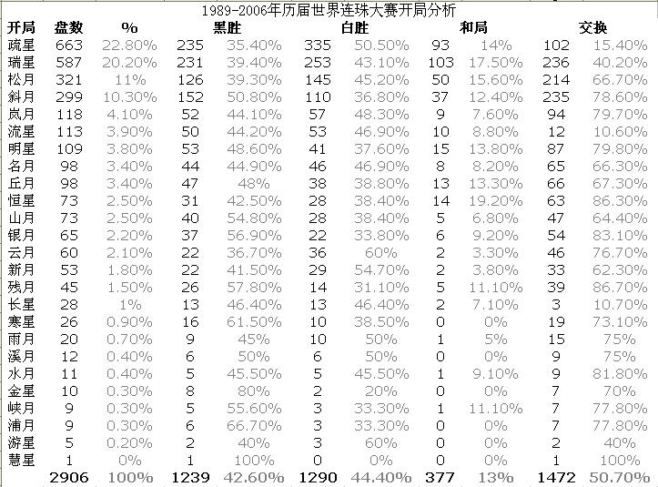

历届世界连珠大赛开局分析
首页
定式及研究
#1 历届世界连珠大赛开局分析 作者：yidefei 发表时间：2006-9-15 11:48:09
这个是从renju.net网站稍作修改移过来！

［ 有志青年 于 2006-9-15 13:16:22 时奖励此帖[金币加 20 威望加1］
#2 Re:历届世界连珠大赛开局分析 作者：news 发表时间：2006-9-16 12:49:31
我这里什么都看不到啊????????????
#3 Re:历届世界连珠大赛开局分析 作者：yidefei 发表时间：2006-9-23 17:28:43
不会吧？那别人能看到吗？
#4 Re:历届世界连珠大赛开局分析 作者：井井有条虫 发表时间：2007-5-21 22:42:09
不错・
为下先的朋友提供了写参考・
#5 Re:历届世界连珠大赛开局分析 作者：棋情妹妹 发表时间：2007-5-31 3:38:44
太搞笑了啊，白胜率最高的云月，黑胜率最高的是彗星.......
#6 Re:历届世界连珠大赛开局分析 作者：无尽 发表时间：2007-5-31 22:02:56
哈哈

#7 Re:历届世界连珠大赛开局分析 作者：小兵 发表时间：2007-6-1 23:16:44
怎么不开花月的啊
#8 Re:历届世界连珠大赛开局分析 作者：棋情妹妹 发表时间：2007-6-2 20:02:46
开花月白的胜率会比云月还高，所以没人敢开。
#9 Re:历届世界连珠大赛开局分析 作者：越狱行辕 发表时间：2008-11-7 0:34:59
这个是挺搞的